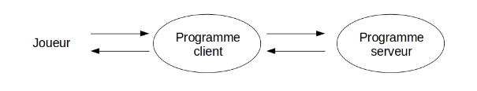
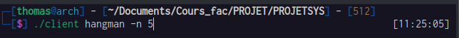
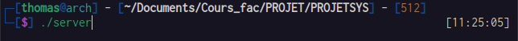
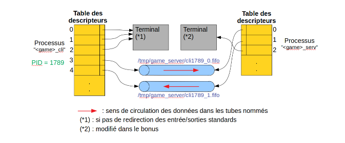

PROJECT SUBJECT
The goal of this project is to create a generic game server allowing play interactive games in console mode (tetris, battleship, maze, power 4, etc.). The player interacts with a client program that interacts with a server program. Both of these programs can run on a remote machine if you use ssh to connect to it. Several parts can take place simultaneously.
So there is to develop a generic game server and a generic client. The client allows you to choose a set of arguments at launch, and the whole difficulty of the project lies in the communication between the programs, and therefore between the processes.
The client program receives via the command line the name of the game to which the player wishes to play and possibly additional arguments ([args]...) to pass to the main() function of the <game>_serv program.
 After verifying the existence of the program <game>_cli, the client program sends to the Server program:
- his Pid
- The name of the game desired<game>and any arguments [args] ...
When it receives this data, the server program, after checking the existence of the <game>_serv program, creates a new process which is then loaded communication with the client program using 2 other tubes named /tmp/game_server/cli<pid>_0.fifo and /tmp/game_server/cli<pid>_1.fifo where <pid> is the PID of the process running the client program.
These 2 named tubes must be created on the server side because the client program Maybe interrupted at any time by the player.Likewise, they will be deleted server side at the end of the game.
Side server, the standard input of the child process is redirected to one of the extremities of the tube named /tmp/game_server/cli<pid>_0.fifo; likewise, the standard output of the child process is redirected to one of the ends of the named tube /tmp/game_server/cli<pid>_1.fifo. Then the child process overlaps to run the <game>_serv program.
Client side, after opening the other two ends of the named tubes /tmp/game_server/cli<pid>_0.fifo and /tmp/game_server/cli<pid>_1.fifo, the process overlaps to run the <game>_cli program.
Communication between <game>_serv and <game>_cli
This following image show the communication between the 2 game programs after the exec :
Use of SIGUSR1 and SIGUSR2 signals
- In the client to server direction: the client sends SIGUSR1 to the server to wake him up and tell him that he will open the pipe named /tmp/game_server.fifo and send it some data (its PID, the name of the desired game <game> and any arguments [args]...)
-
In the server to client direction:
- The server sends SIGUSR1 to the client to indicate that the 2 pipes named /tmp/game_server/cli<pid>_<x>.fifo have been created; the client will be able to open them and cover himself; the party will be able to unroll
- The server sends SIGUSR2 to the client to indicate that an error occurred (program <game>_serv does not exist, system error, etc.). In this case, the client program must terminate.
hangman_serv & hangman_cli
Hangman is a game of finding a word by guessing what are the letters that compose it. The word to guess is chosen randomly by the program hangman_serv in the supplied dictionary.txt file. At the start of the game, the word to find is displayed by replacing each letter with a dash (the number of dashes displayed is therefore equal to the length of the word). Then, on each game turn, the player proposes a letter. If the letter is part of the word, it is written in its place as many times as it is in the word. Otherwise, the number of errors of the player is incremented. If this number of errors exceeds the number of errors allowed set at the start of the game, then the player has lost. In other words, the player wins if he manages to guess the word with a lower or equal number of errors the number of errors allowed.